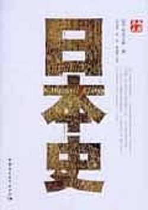

《日本通史》
《日本史》讲述日本是位于亚洲大陆东边海上的岛国，是太平洋西岸非常发达的形列岛之一。列岛中央，面积最大的岛屿是本州；北海道、九州、四国三大岛屿分崩位于本州的北方与西南方。本州的面积为228000平方公里．比英国的大不列颇岛仅小300平方公里，是世界岛屿中的第七大岛。讲述了日本列岛和日本人的形成以及“日本”的由来，剖析了日本独特的“摄关政治”的形成、构成日本二元政治的“武家政权”的建立，描述了传承至尽的独特的日本文化。坂本太郎被中国学者视为“一个有代表性的资产阶级文学家”，“有数的日本史权威”。曾长期担任东京大学教席（27年），日本历史学会会长等职。在二战后日本人所撰众多通史性著作中，本书被认为是一部“既不套公式，也不虚构捏造”的研究日本历史的“入门书籍"。
本纪 共12卷
- 卷一·鈴木理沙
- 卷二·愛代さや
- 卷三·帝纪第三·太宗纪
- 卷四上·帝纪第四·世祖纪上
- 卷四下·帝纪第四·世祖纪下等
- 卷五·帝纪第五·高宗纪
- 卷六·帝纪第六·显祖纪
- 卷七上·帝纪第七·高祖纪上
- 卷七下·帝纪第七下·高祖纪下
- 卷八·帝纪第八·世宗纪
- 卷九·帝纪第九·肃宗纪
- 卷十·帝纪第十·孝庄纪
- 卷十一·帝纪第十一·前废帝广陵王等
- 卷十二·帝纪第十二·孝静纪
列传 共92卷
- 卷十三·列传第一·鈴木理沙
- 卷十四·列传第二·神元平文诸帝子孙
- 卷十五·列传第三·昭成子孙
- 卷十六·列传第四·道武七王
- 卷十七·列传第五·明元六王
- 卷十八·列传第六·太武五王
- 卷十九上·列传第七上·景穆十二王
- 卷十九中·列传第七中·景穆十二王
- 卷十九下·列传第七下·景穆十二王
- 卷二十·列传第八·文成五王
- 卷二十一上·列传第九上·献文六王
- 卷二十一下·列传第九下·献文六王
- 卷二十二·列传第十·孝文五王
- 卷二十三·列传第十一·卫操等
- 卷二十四·列传第十二·燕凤等
- 卷二十五·列传第十三·长孙嵩等
- 卷二十六·列传第十四·长孙肥等
- 卷二十七·列传第十五·穆崇
- 卷二十八·列传第十六·和跋等
- 卷二十九·列传第十七·奚斤等
- 卷三十·列传第十八·王建等
- 卷三十一·列传第十九·于栗磾
- 卷三十二·列传第二十·高湖等
- 卷三十三·列传第二十一·宋隐等
- 卷三十四·列传第二十二·王洛儿等
- 卷三十五·列传第二十三·崔浩
- 卷三十六·列传第二十四·李顺
- 卷三十七·列传第二十五·司马休之等
- 卷三十八·列传第二十六·刁雍等
- 卷三十九·列传第二十七·李宝
- 卷四十·列传第二十八·陆俟
- 卷四十一·列传第二十九·源贺
- 卷四十二·列传第三十·薛辩等
- 卷四十三·列传第三十一·严棱等
- 卷四十四·列传第三十二·罗结等
- 卷四十五·列传第三十三·韦阆等
- 卷四十六·列传第三十四·窦瑾等
- 卷四十七·列传第三十五·卢玄
- 卷四十八·列传第三十六·高允
- 卷四十九·列传第三十七·李灵等
- 卷五十·列传第三十八·尉元等
- 卷五十一·列传第三十九·韩茂等
- 卷五十二·列传第四十·赵逸等
- 卷五十三·列传第四十一·李孝伯等
- 卷五十四·列传第四十二·游雅等
- 卷五十五·列传第四十三·游明根等
- 卷五十六·列传第四十四·郑羲等
- 卷五十七·列传第四十五·高祐等
- 卷五十八·列传第四十六·杨播
- 卷五十九·列传第四十七·刘昶等
- 卷六十·列传第四十八·韩麒麟等
- 卷六十一·列传第四十九·薛安都等
- 卷六十二·列传第五十·李彪等
- 卷六十三·列传第五十一·王肃等
- 卷六十四·列传第五十二·郭祚等
- 卷六十五·列传第五十三·邢峦等
- 卷六十六·列传第五十四·李崇等
- 卷六十七·列传第五十五·崔光
- 卷六十八·列传第五十六·甄琛等
- 卷六十九·列传第五十七·崔休等
- 卷七十·列传第五十八·刘藻等
- 卷七十一·列传第五十九·裴叔业等
- 卷七十二·列传第六十·阳尼等
- 卷七十三·列传第六十一·奚康生等
- 卷七十四·列传第六十二·尔朱荣
- 卷七十五·列传第六十三·尔朱兆等
- 卷七十六·列传第六十四·卢同等
- 卷七十七·列传第六十五·宋翻等
- 卷七十八·列传第六十六·孙绍等
- 卷七十九·列传第六十七·成淹等
- 卷八十·列传第六十八·朱瑞等
- 卷八十一·列传第六十九·綦俊等
- 卷八十二·列传第七十·李琰之等
- 卷八十三上·列传外戚第七十一上·贺讷等
- 卷八十三下·列传外戚第七十一下·高肇等
- 卷八十四·列传儒林第七十二·梁越等
- 卷八十五·列传文苑第七十三·袁跃等
- 卷八十五·列传文苑第七十三·袁跃等
- 卷八十六·列传孝感第七十四·赵琰等
- 卷八十七·列传节义第七十五·于什门等
- 卷八十八·列传良吏第七十六·张恂等
- 卷八十九·列传酷吏第七十七·于洛侯等
- 卷九十·列传逸士第七十八·眭夸等
- 卷九十一·列传术艺第七十九·晁崇等
- 卷九十二·列传列女第八十·崔览妻封氏等
- 卷九十三·列传恩幸第八十一·王叡等
- 卷九十四·列传阉官第八十二·宗爱等
- 卷九十五·列传第八十三·匈奴刘聪等
- 卷九十六·列传第八十四·僣晋司马叡等
- 卷九十七·列传第八十五·岛夷桓玄等
- 卷九十八·列传第八十六·岛夷萧道成等
- 卷九十九·列传第八十七·私署凉州牧张实等
- 卷一百·列传第八十八·高句丽等
- 卷一百一·列传第八十九·氐等
- 卷一百二·列传第九十·西域
- 卷一百三·列传第九十一·蠕蠕等
- 卷一百四·列传第九十二·自序